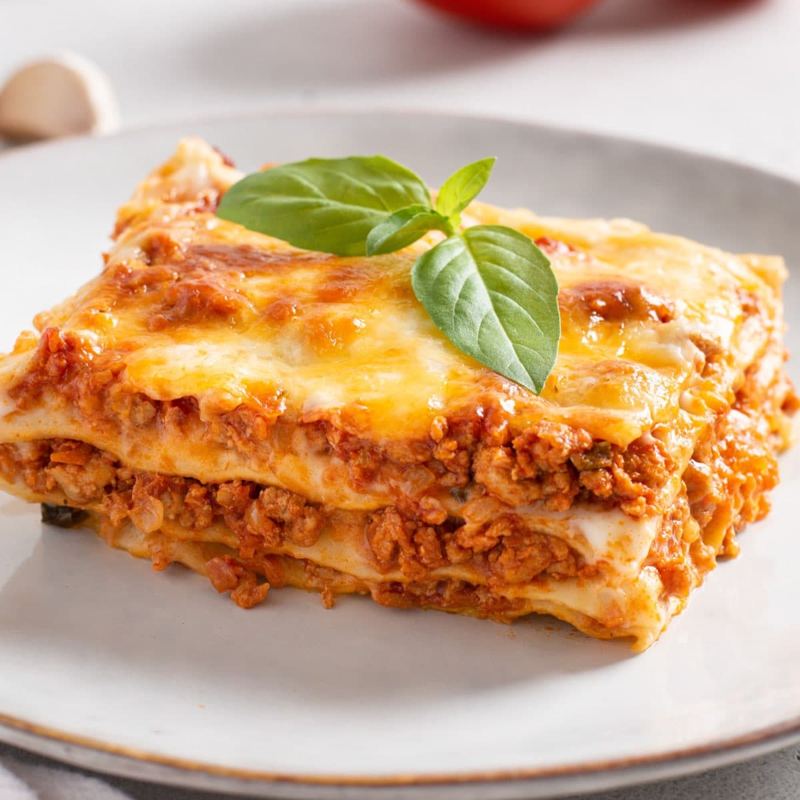

Vegan Lasagna

Description
Good for people who aren't reluctant to try tofu. After this lasagna you and your guests will love it!
Ingredients
- 340 grams of uncooked lasagna noodles
- 300 grams of firm tofu, crumbled
- ¼ teaspoon salt
- ¼ teaspoon black pepper
- ¼ teaspoon ground nutmeg
- 2 tablespoons oat milk
- 1 cup spaghetti sauce
- 1 tablespoon dried parsley
- 2 cups of vegan mozarella cheese, divided
- ½ cup grated vegan Parmesan cheese
Directins
- Preheat oven to 350 degrees F (175 degrees C).
- Bring a large pot of lightly salted water to a boil. Add lasagna and cook for 8 to 10 minutes or until al dente; drain.
- In a medium bowl combine tofu, eggs, salt, pepper, nutmeg, milk, spaghetti sauce, parsley and 1 cup of mozzarella cheese. Spread a layer in the bottom of a 9x13 inch baking dish.
- Layer lasagna noodles with the sauce mixture, ending with sauce. Sprinkle with remaining mozzarella and Parmesan cheese.
- Bake in preheated oven for 25 to 35 minutes.